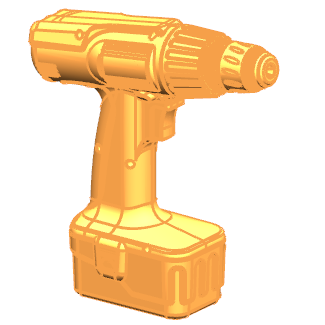

创建最终的产品包络体
-
显示所有链接的体。

-
右击装配导航器背景并确保已选中 WAVE 模式。
-
右击装配 i_pkg 并选择 WAVE→新建级别。
-
在新建级别对话框中，点击指定部件名。
-
在选择部件名对话框的文件名输入框中，键入 customer_pkg 并回车。
-
在新建级别对话框的过滤器列表中，确保选择的是任意。
-
使用 Ctrl + A 快捷键以选择 i_pkg 部件文件中的所有体。

-
点击确定。
在装配导航器中，您可以看到已创建新的组件 customer_pkg，并且 i_pkg 仍然是装配。
-
右击 customer_pkg 并选择替换引用集→空。
对于这个练习，您创建这个装配结构的目的是是产品追踪更简单，您需要显示空引用集是因为装配以及新组件共享相同的实体，这种创建最终消费者产品包络体的过程可能与您的公司并不相同。
-
将 customer_pkg 设为显示部件。
在部件导航器中，您可以看到删除面特征已被移除，可以将这个部件文件发送给消费者或供应商，他们将无法看到内部特征的任何信息，这个简化的产品包络体部件文件也链接到您原始的设计数据中，任何对外部特征的修改都会使简化的产品包络体部件文件更新。